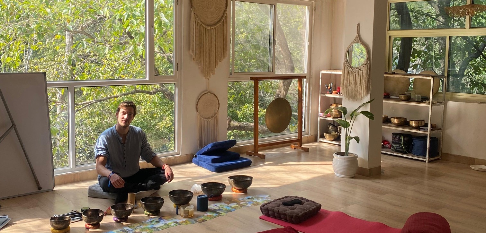
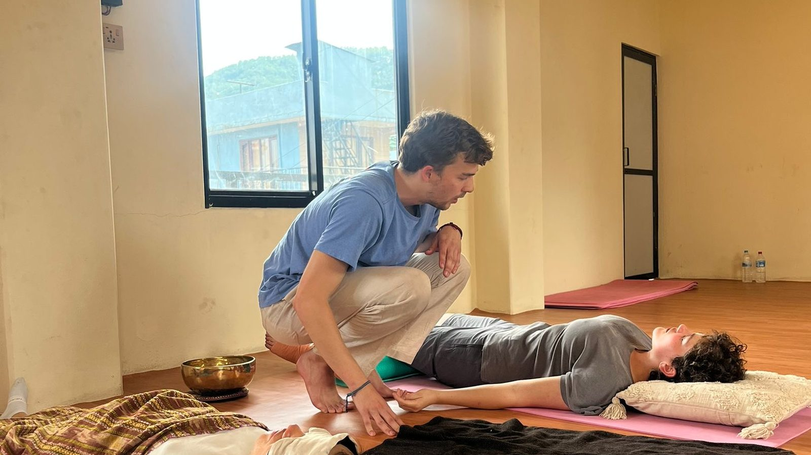

呼吸，放松，回到当下。
呼吸疗愈与瑜伽课程，涵盖调息法、哈他瑜伽、阴瑜伽等等, 每一节课都用心陪伴。无需任何经验。

近期动态
目前正在进行的一些事情,会持续更新。
- 呼吸疗愈培训(Level 1),摩洛哥 12 月 3 日至 10 日。我会在这次静修中担任助教,而不是以学员 身份参加,所以这周的线下预约依然有限。它的传承可以追溯到 Leonard Orr,也就是 Rebirthing 呼吸疗愈的创始人。 联系我,我们一起找一个合适的 时间。
欢迎
我是 Justus，一名认证呼吸疗愈师,并完成了 500 小时瑜伽教师培训。 连结式呼吸、调息法、瑜伽与冥想都可以线上或线下进行，看哪种 更适合你。Rebirthing 呼吸疗愈是唯一的例外，这项工作很强烈， 所以只在线下带领，这样我才能直接陪伴与引导你。这些年下来， 这也慢慢变成了 一套相当丰富的工具箱：连结式呼吸、Rebirthing 呼吸疗愈、调息法、 瑜伽、冥想，再加上一些身体工作与音疗。我会根据你的需要，选用 其中真正合适的部分。


无论你从哪里开始
来到这个页面的人,起点各不相同。有些人从未上过瑜伽垫,有些人已经有稳定的练习, 大多数人则介于两者之间。无论是哪种情况,都不会改变我和你一起工作的方式, 但可能会影响从哪里开始最容易。
你从未做过瑜伽或呼吸疗愈
这完全正常,这里不会假设你已经了解任何相关内容。连接呼吸课程通常是 最容易的起点,不需要任何准备,我会在过程中解释一切。下面的 "什么是呼吸疗愈"部分,正是为这个起点写的。
你做过瑜伽、冥想或类似的练习
你已经知道与自己的身体和心智相处是什么感觉,所以呼吸练习本身对你来说 会更熟悉,而不是全新的体验。连接呼吸课程或一轮调息练习都是很自然的 下一步。
什么是呼吸疗愈
呼吸疗愈,简单来说,就是有意识地呼吸,按照特定的模式进行，而不是 无意识的日常呼吸。在我提供的大多数课程中，这意味着连结式呼吸: 一种吸气和呼气之间没有停顿的连续呼吸,持续足够长的时间，让你的 神经系统逐渐改变当下的反应方式。不需要任何经验，也不需要相信 什么，无论你是好奇、怀疑，还是完全的新手，它的作用方式都是 一样的。
压力和旧有的情绪模式常常会以身体里积压的紧绷感呈现出来:紧绷的 下颌、几乎不怎么起伏的胸腔、始终无法真正放松的肩膀。更缓慢、 更深长的呼吸会激活迷走神经,也就是身体最主要的放松通路,并向 神经系统传递一个信号:现在可以放下这些紧绷了。这往往是人们在 课程中最先感受到的变化:身体里一些自己都没意识到绷紧的部位 开始松下来。
这一点也有直接的研究支持。2023 年发表在《Scientific Reports》 上的一项随机对照试验荟萃分析发现,呼吸练习能够显著降低自我 报告的压力水平,其中缓慢呼吸的效果最为明显,这与更高的心率 变异性以及副交感神经系统(身体的恢复模式)活动增强有关 (Fincham et al., 2023)。
关于呼吸疗愈,你或许一直想知道的事
这真的有用吗?有研究支持吗?
是的,而且是在两个层面上。直接来看,缓慢有意识的呼吸练习, 在随机对照试验中已被证明能显著降低压力并提升心率变异性, 这正是前面提到的研究(Fincham et al., 2023)。另一项独立的 随机对照研究发现,一种以呼吸为核心的练习能显著减轻美国 退伍军人的创伤后应激障碍(PTSD)和焦虑症状,这种效果在一年 后依然存在(Seppälä et al., 2014)。往更广的层面看,创伤 研究者 Bessel van der Kolk 在他广受阅读的著作《身体从未 忘记》(The Body Keeps the Score)中提出,基于他数十年的 临床经验,压力与创伤同样储存在身体里,而不只是在头脑中, 身体层面的方法,呼吸也包括在内,有时能触及单靠谈话无法 抵达的地方。这些研究都不是专门针对 Rebirthing 呼吸疗愈 本身的,但说的其实是同一片领域:身体留住了紧绷,而呼吸是 回到松弛状态的一条可靠途径。
这是某种灵修或宗教修行吗?
并不一定。它是通过身体与神经系统起作用，而不依赖于任何特定的信仰。无论你带着怎样的理解来到这里，灵性的也好，完全世俗的也好，通常都能适用。
如果我哭了、发抖、大笑，或者感受到很强烈的情绪怎么办?
这些都很正常，尤其是在 Rebirthing 呼吸疗愈中。情绪和身体的释放常常同时发生，而且你永远不会被推向超出你舒适范围的地方。
我需要身体柔软、体能好，或者已经有经验吗?
不需要。大部分练习都是躺着或坐着完成的。起作用的是呼吸，而不是你的身体状态。
我会过度换气或者晕过去吗?
在强度较高的技巧中,有些人会感到手部或嘴唇发麻、轻微头晕,或手部暂时性的僵硬。这是一种已知且无害的反应,是身体在适应一种不熟悉的呼吸方式,并不代表出了什么问题,我也会在开始前提前告诉你可能会经历什么,这样就不会让你措手不及。
这和冥想有什么不同?
冥想大多是观察当下的心念本身。呼吸疗愈则会先主动改变你的生理状态，先身体后心理，这也是它往往见效更快、体验更直接的原因之一。
它能替代心理治疗或医疗吗?
不能，我也绝不会这样建议。它可以很好地配合心理治疗或医疗，但不能替代其中任何一个。
我有医学或心理学背景，我应该了解什么?
从机制上说，缓慢的呼吸练习通过提升迷走神经张力与心率变异性起作用，使自主神经系统的平衡向副交感神经活动倾斜，这与前文提到的研究所指的是同一条通路。我不做诊断、不进行治疗，也不会干预任何正在进行的用药或治疗计划。如果有需要，我也乐意与负责治疗的医生、心理治疗师或心理咨询师保持沟通。如果你对某位来访者或某种具体状况有疑问，欢迎直接联系我。
一节课是什么感觉
课程会根据内容在线下或线上进行，一对一或小组皆可。我们先 一起安顿下来,慢慢进入呼吸与身体的练习，最后留出时间单纯地 休息，感受当下浮现的一切。一切不强求,你会按照自己的节奏被 温柔引导。
